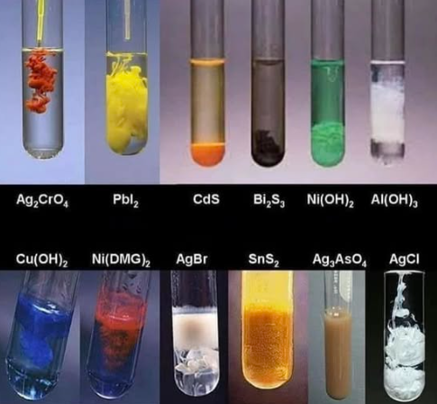

Specimens and Reagents
D
\(6.30\,g\,dm^{-3}\) ethanedioic acid dihydrate, \(H_2C_2O_4\cdot2H_2O\).
E
\(3.10\,g\,dm^{-3}\) potassium tetraoxomanganate(VII), \(KMnO_4\).
F
Uniform 1:1 mixture of copper(II) tetraoxosulphate(VI) and starch.
Teacher Class Before the Test
Enter Test 14 Question Paper
Question 1 - Quantitative Analysis
D is \(0.0500\,mol\,dm^{-3}\) ethanedioic acid. E is \(KMnO_4\) solution.
Put E in the burette. Pipette \(25.0\,cm^3\) of D into a conical flask. Add about \(10\,cm^3\) of dilute \(H_2SO_4\), warm gently and titrate with E until a permanent pale pink colour is obtained.
- Tabulate your burette readings.
- Calculate the average titre.
- Calculate the concentration of E in \(mol\,dm^{-3}\).
- Calculate the concentration of E in \(g\,dm^{-3}\). [\(KMnO_4=158\)]
- Calculate the percentage purity of E if the label states \(3.10\,g\,dm^{-3}\).
Question 2 - Qualitative Analysis
F is a mixture of copper(II) tetraoxosulphate(VI) and starch. Record observations and inferences.
- Add distilled water to F, shake and filter. Keep the filtrate and residue.
- Add iodine solution to a little residue.
- To the filtrate, add NaOH in drops and then in excess.
- To another portion, add NH3 in drops and then in excess.
- To another portion, add BaCl2 followed by dilute HCl.
- To another portion, add a little zinc dust and shake.
Question 3 - Practical Knowledge
- Why is dilute \(H_2SO_4\) added before the redox titration?
- Why is the solution warmed before titration?
- State the endpoint colour in the titration.
- State the confirmatory test for starch.
- Draw and label the titration setup and a filtration setup.
Best WAEC-Style Solution and Teacher Explanation
Question 1 Solution
| Titration | Rough | 1st | 2nd | 3rd |
|---|---|---|---|---|
| Final reading / cm3 | 25.80 | 25.50 | 25.45 | 25.50 |
| Initial reading / cm3 | 0.00 | 0.00 | 0.00 | 0.00 |
| Volume of E used / cm3 | 25.80 | 25.50 | 25.45 | 25.50 |
Percentage purity \(=\frac{3.10}{3.10}\times100=100\%\).
Question 2 Solution
| Test | Observation | Inference |
|---|---|---|
| F + water, filter | Blue filtrate and residue obtained. | Soluble copper(II) salt and insoluble starch present. |
| Residue + iodine | Blue-black colouration. | Starch confirmed. |
| Filtrate + NaOH | Blue precipitate insoluble in excess. | \(Cu^{2+}\) present. |
| Filtrate + NH3 | Pale blue precipitate dissolves in excess to deep blue solution. | \(Cu^{2+}\) confirmed. |
| Filtrate + BaCl2 + HCl | White precipitate insoluble in acid. | \(SO_4^{2-}\) present. |
| Filtrate + zinc dust | Blue colour fades; reddish-brown deposit forms. | Copper is displaced by zinc. |
Question 3 Diagram Teacher Guide

Redox Titration
Teacher: E is in the burette, D plus dilute H2SO4 is in the flask. Warm before titration and stop at permanent pale pink.

Filtration
Teacher: Residue remains on filter paper; filtrate passes into the beaker. Test both parts separately.

Copper(II) Tests
Teacher: Blue precipitate and deep blue ammonia solution are strong evidence for \(Cu^{2+}\).
- Dilute \(H_2SO_4\) supplies \(H^+\) needed for \(MnO_4^-\) to reduce to \(Mn^{2+}\).
- Warming increases the rate of reaction between \(KMnO_4\) and ethanedioic acid.
- Endpoint: permanent pale pink.
- Starch: iodine gives blue-black colouration.